A selection of applications and field work from Rock Solid RCC.
Start Your Project →Field photography from agricultural, grain, commercial and industrial RCC applications.
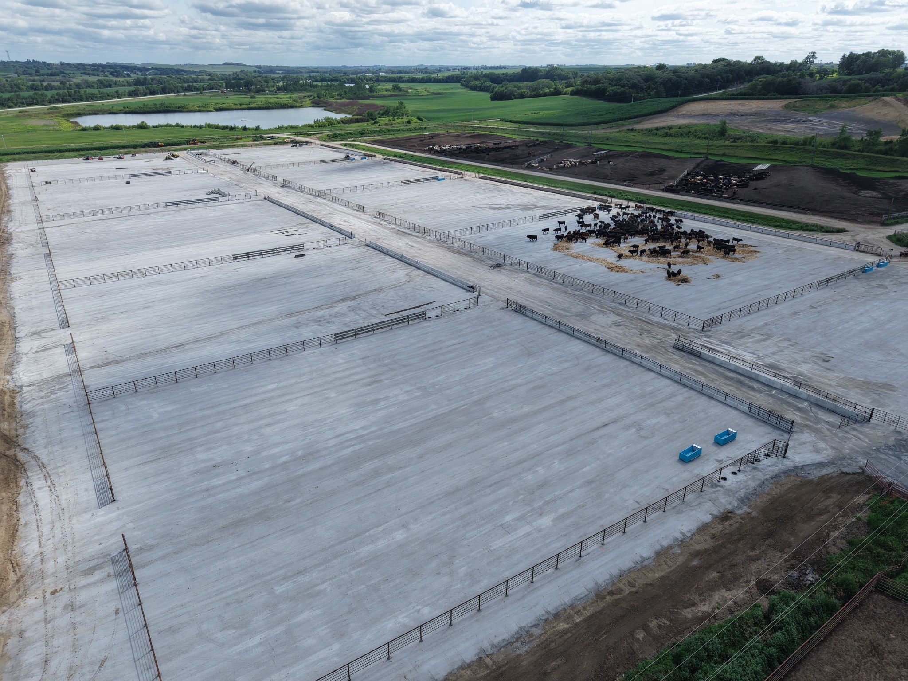

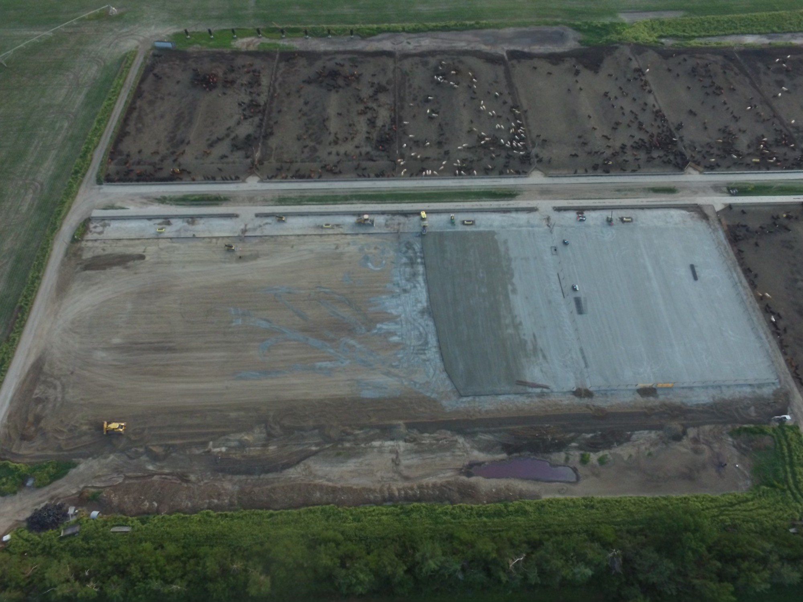
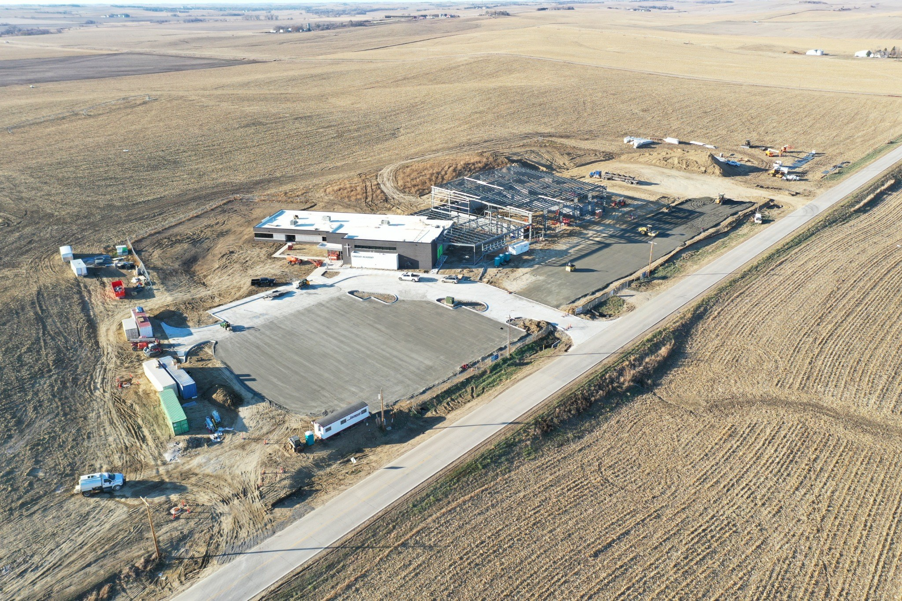


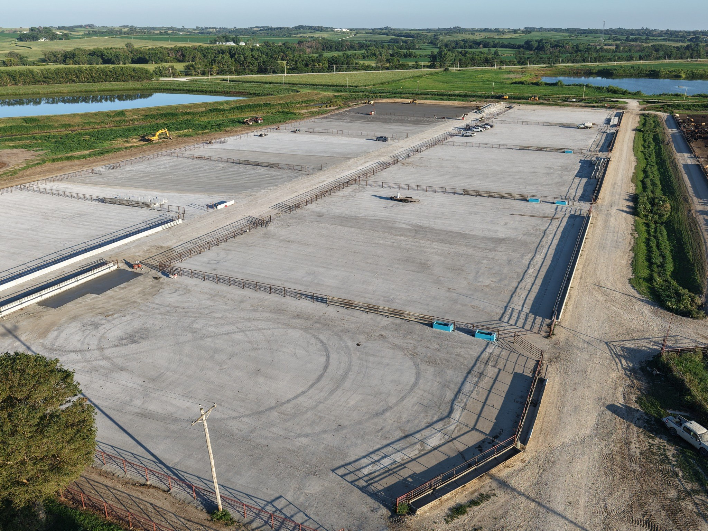
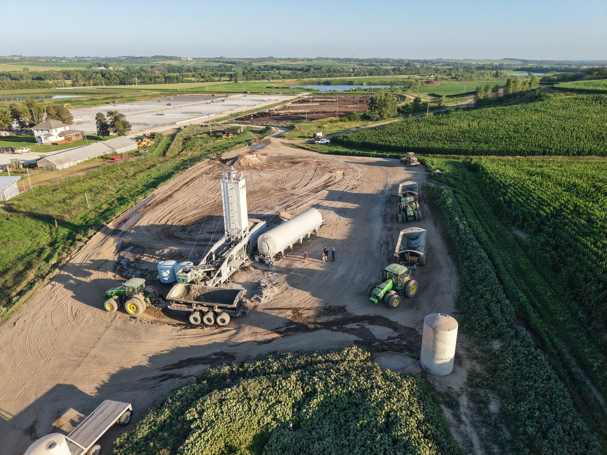
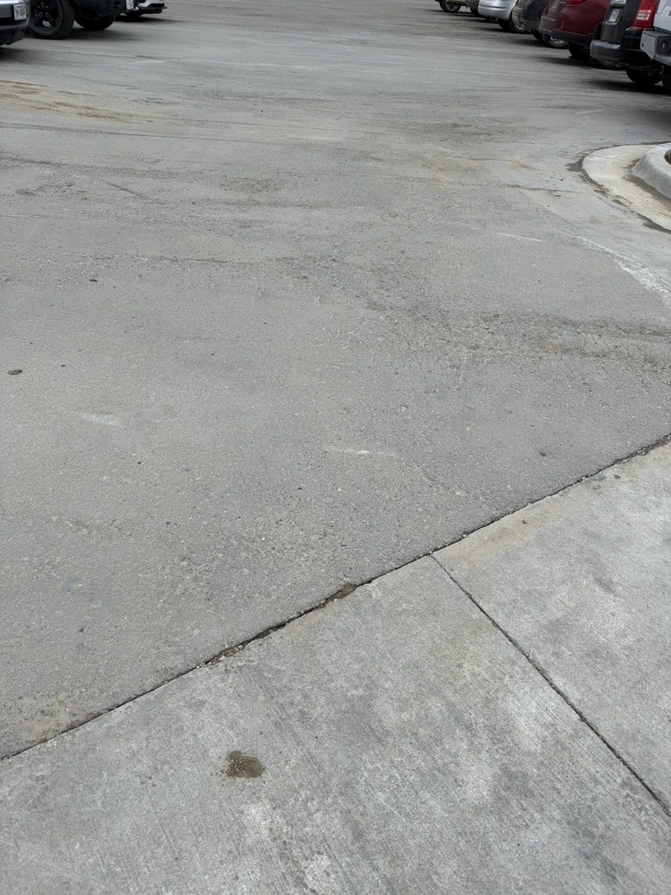
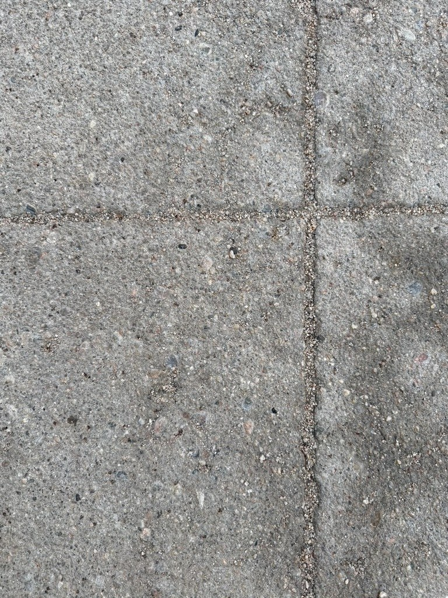
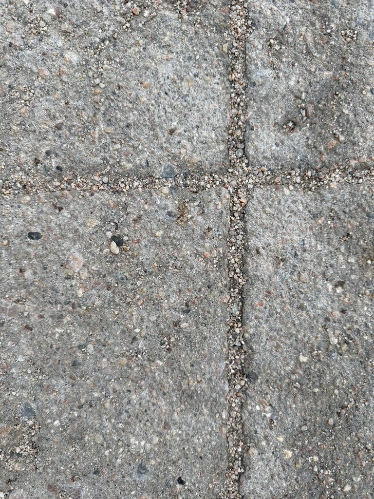

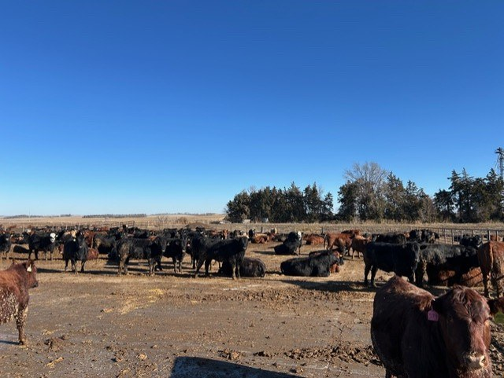
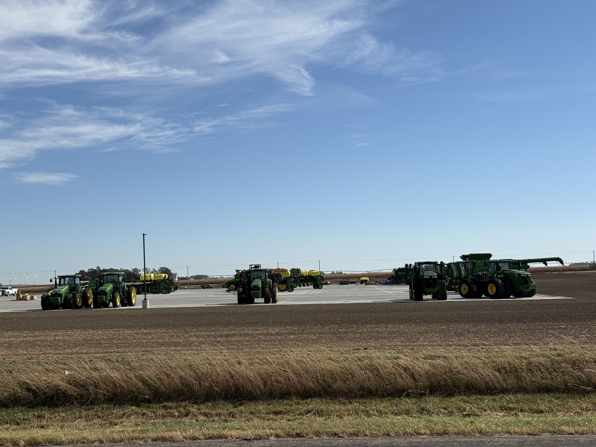

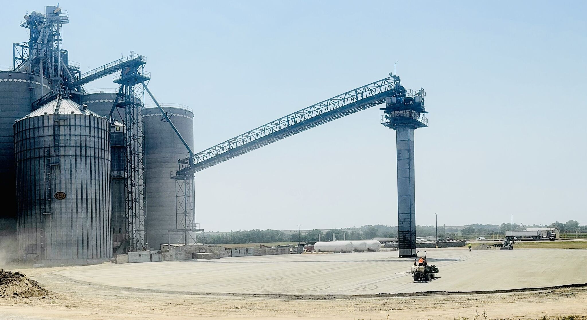
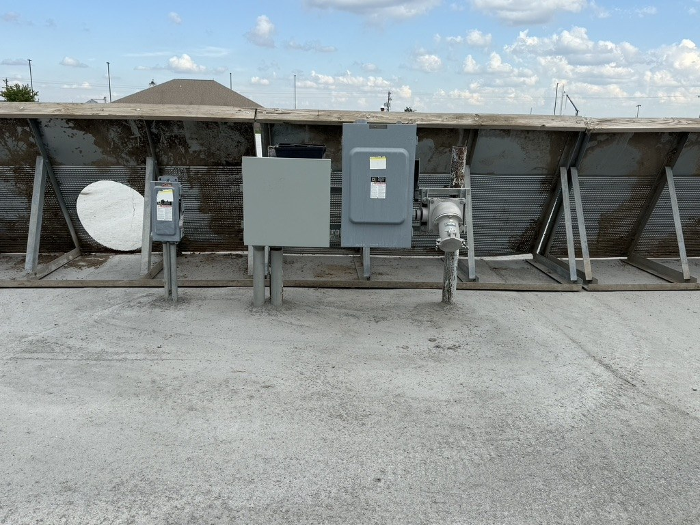
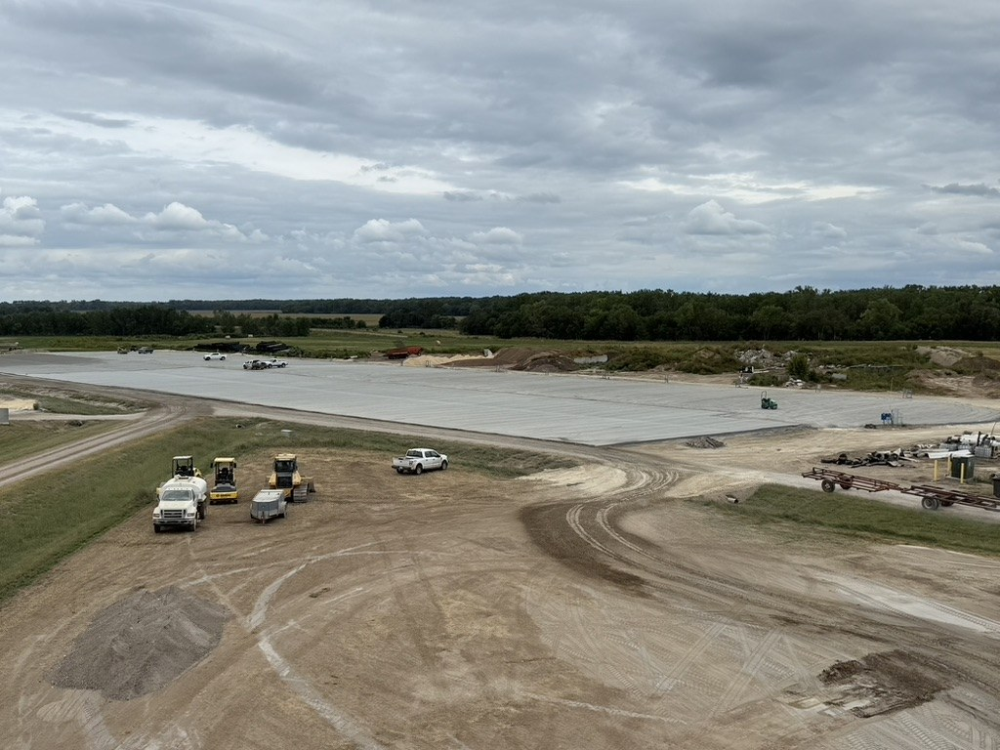
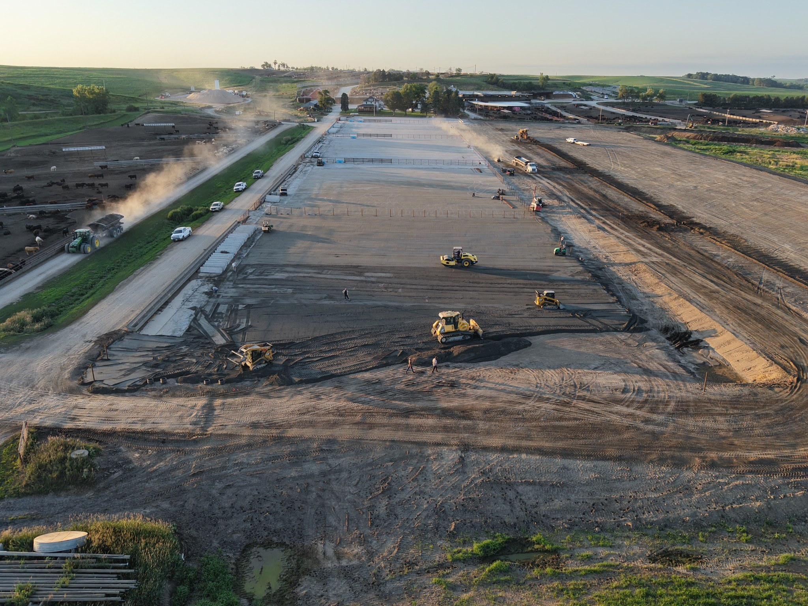


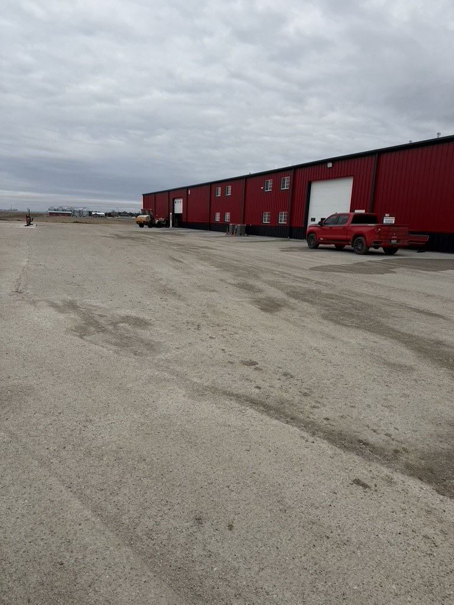
Let’s talk about your site and what RCC can do for it.
Request an Estimate →